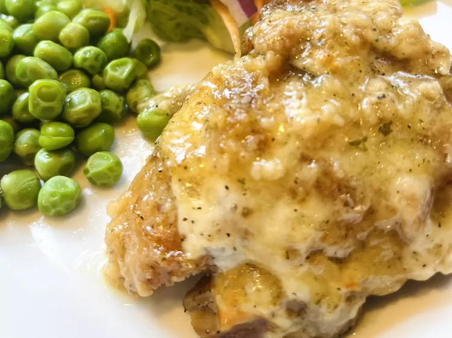

Muenster Chicken and Mushrooms

Description
This juicy chicken is perfect for a home cooked family dinner. It's fun enough that the kids will love it and juicy enough that no one can resist.
We use mushrooms and broth to keep the dish moist in one baking pan and the Muenster cheese melts into the breaded chicken for a signature flavor!
Ingredients
- 6 skinless, boneless chicken breasts
- 1 1/2 cups milk
- 2 cups dried bread crumbs, seasoned
- 6 slices Muenster cheese
- 1 cup fresh sliced mushrooms
- 1/2 cup chicken broth
Directions
- Preheat the oven to 350 degrees F (175 degrees C).
- Dip the chicken in milk, then in breadcrumbs. Lightly brown coated chicken in a large skillet, then arrange chicken in a 9x13-inch baking dish.
- Top each chicken with a slice of cheese. Top with mushrooms, then pour broth over and around chicken. Cover the dish with aluminum foil.
- Bake for 30 minutes; remove cover, baste with any remaining broth, and bake for another 15 to 20 minutes.